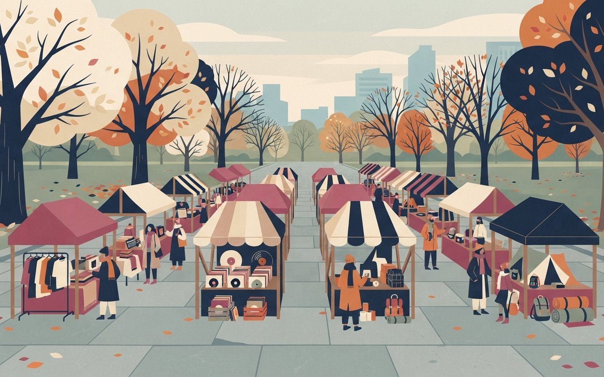

중고 장터 · 여의도
번개 플리마켓 14~15일 여의도공원 — 판매자 500여 명·150여 팀, 회원 무료 입장
번개장터의 '번개 플리마켓 페스티벌'이 11월 14일(토)~15일(일) 서울 영등포구 여의도공원 문화의 마당에서 열린다. 150여 팀, 판매자 500여 명이 참여해 역대 최대 규모이고 올해가 4회째다. 지난해 노들섬 행사에는 이틀간 7만 명이 다녀갔다.
럭셔리·빈티지 패션, 키덜트, 디지털 기기, 캠핑·러닝용품, LP, 포켓몬카드 등을 13개 공간에서 판다. 14일에는 실리카겔, 15일에는 카더가든의 무료 공연이 있다. 번개장터 회원이면 무료로 입장한다. 운영 시간과 공연 시각은 기사에 없다.
- 일시·장소11/14(토)~15(일) · 서울 영등포구 여의도공원 문화의 마당 · 운영 시간은 기사에 없음
- 규모150여 팀 · 판매자 500여 명(역대 최대) · 13개 공간 · 올해 4회째 · 지난해 이틀간 7만 명
- 요금번개장터 회원 무료 입장 · 비회원 입장은 기사에 없음
- 공연14일 실리카겔 · 15일 카더가든(무료)
- 주의사전예약은 접수 1시간 만에 매진 — 현장 입장 방법은 공식 안내 확인 권장 · 주말 비 예보 ⚠ 변동 가능
🎨 알고 가면 달라지는 것
이데일리 — 번개 플리마켓 페스티벌 뉴스1 — 14일부터 이틀간
이데일리(11/9 14:17) 본문 기준 · 뉴스1(11/9 08:53)은 요약만 확인(규모·무료 입장·공연 일치) (확인 2026-11-12)
현장 거래는 번개장터 앱으로 한다. 앱 설치와 가입을 미리 해 두면 줄이 짧아진다. 사전예약은 접수 1시간 만에 매진됐으니 현장 입장이 되는지 먼저 확인하자.
여의도공원 중고 장터,
판매자 500여 명
14일과 15일 여의도공원 문화의 마당에서 번개 플리마켓이 열려요. 사전예약은 매진돼 현장 입장은 공식 안내를 확인하고, 비 예보가 있으니 우산을 챙기세요.
서울 영등포
11/14~11/15
150여 팀|역대 최대 규모 · 13개 공간
An outdoor flea market in a wide city park plaza in late autumn with rows of small stalls selling vintage clothes, vinyl records and camping gear, flat illustration, no text, no logos
